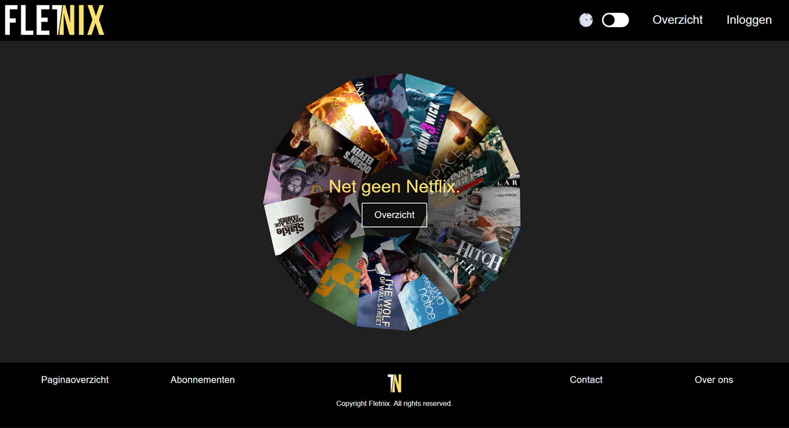
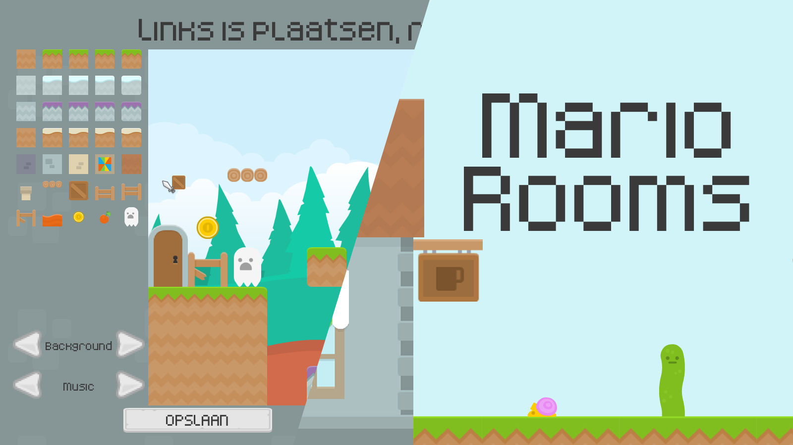
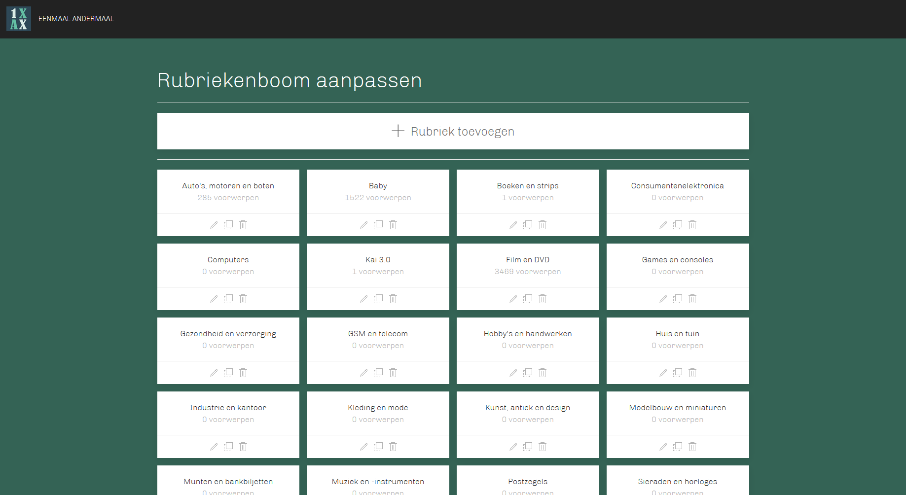

Simon Vreman
Wie ben ik?
Mijn naam is Simon en ik ben een 18-jarige informatica student. Mijn sterke punten zijn wiskunde en creatief problemen aanpakken. Naast programmeren werk ik bij een fietsenmaker en ga ik graag een rondje hardlopen.
Mijn projecten
Ik heb al een aantal leuke projecten gemaakt, en affiniteit opgebouwd met verschillende talen. Hieronder een aantal voorbeelden!
Fletnix
Voor dit project heb ik een site gemaakt in PHP met HTML en CSS zonder het gebruik van frameworks. De site is aangesloten op een MS-SQL database.
MarioRooms
Dit platform spel kent levels gemaakt uit 'Rooms' waar de speler zich doorheen moet werken om het einde te halen. Het spel kent een aantal pre-made levels maar biedt ook de mogelijk om zelf levels toe te voegen. Dit is volledig geschreven in Java.
EenmaalAndermaal
In groepsverband hebben we met SCRUM een volledig functionele veilingsite gemaakt in PHP. De site kent zowel een publieke kant voor het veilen van producten als een beheerdersapplicatie om de MS-SQL database te beheren.
Opleidingen
Ik studeer nu ICT aan de HAN, en als het verloopt volgens plan volgend jaar Technische Informatica aan de universiteit
2020 - heden
HBO-ICT Development - voltijd propedeusefase
HAN University of Applied Sciences
2015 - 2020
HAVO Natuur Techniek & Gezondheid - cum laude
Christelijk College Schaersvoorde
2021
VWO Wiskunde B certificaat
Centrale Commissie Voortentamen Wiskunde
Werkervaring
Ik ben nog jong, maar ik heb al een aantal baantjes gehad
2019 - heden
Magazijnmedewerker en verkoper
Harm Takke Tweewielers Dinxperlo
2021 - heden
Ontwikkeling Java Game-Engine voor propedeuse studenten
HAN University of Applied Sciences